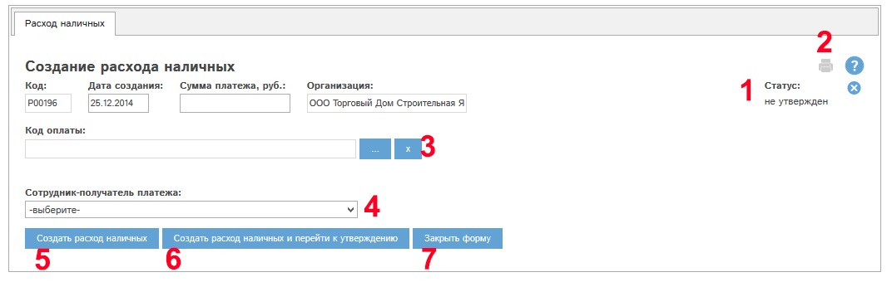
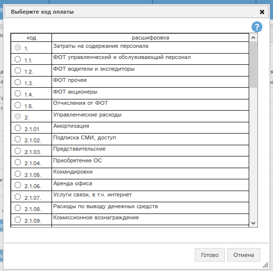
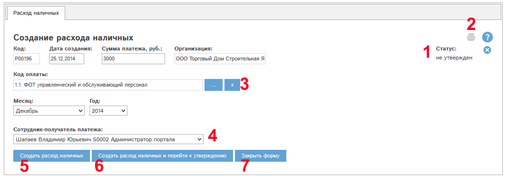

Создание расхода наличных при наличии у Вас прав на данное действие производится с помощью кнопки «Создать расход наличных…» в реестре расходов наличных.
Расходы наличных специальных видов создаются следующим образом:
- доставка по исходящим счетам - создается из исходящего счета
- экспедирование по исходящим счетам - создается из исходящего счета
- комиссионное вознаграждение - создается из специальных отчетов при наличии специальных возможностей
Создание происходит в 2 этапа: заполнение расхода и утверждение расхода.
При нажатии кнопки «Создать расход наличных…» открывается окно создания расхода:

Рис. 5.50 Окно создания расхода наличных
Рассмотрим поля и кнопки окна созданиярасхода наличных.
Поле «Статус» (1) у вновь создаваемого расхода наличных имеет значение «не утвержден».
Щелкнув по кнопке  ,
Вы можете отменить создание расхода.
,
Вы можете отменить создание расхода.
Кнопка «Печать» (2) позволяет распечатать расход, в окне создания расхода данная кнопка неактивна.
Блок "Код оплаты" (3). В этом блоке необходимо выбрать из справочника видов платежей код оплаты. Для выбора нажмите кнопку "..." в блоке 4. Откроется окно выбора кода оплаты:

Рис. Окно выбора кода оплаты.
Отметьте требуемый код оплаты в столбце "Код" и нажмите кнопку "Готово". Выбранный нами код подставится в карту расхода.
В зависимости от выбранного кода оплаты, в карте расхода наличных появляются дополнительные поля, и применяются следующие правила их заполнения:
- код 2.1.09. Комиссионное вознаграждение - появляется обязательное поле "Контрагент"
- коды:
- 1.1. ФОТ управленческий и обслуживающий персонал
- 1.2. ФОТ водители и экспедиторы
- 1.3. ФОТ прочее
- 1.4. ФОТ акционеры
- 1.5. Отчисления от ФОТ
- коды:
- 4.1. НДС
- 4.2. Налог на прибыль
- 4.3. Прочие налоги
- при выборе всех кодов, кроме "1.5. Отчисления от ФОТ" - поле "Сотрудник-получатель платежа" (4) обязательно для заполнения.
Выберем код "1.1. ФОТ управленческий и обслуживающий персонал".
Выберем сотрудника-получателя платежа, месяц, год; укажем сумму платежа:

Рис. Создание расхода наличных: карта заполнена.
Затем нажмем кнопку «Создать расход наличных и перейти к утверждению» (6). Откроется окно редактирования вновь созданного расхода наличных.